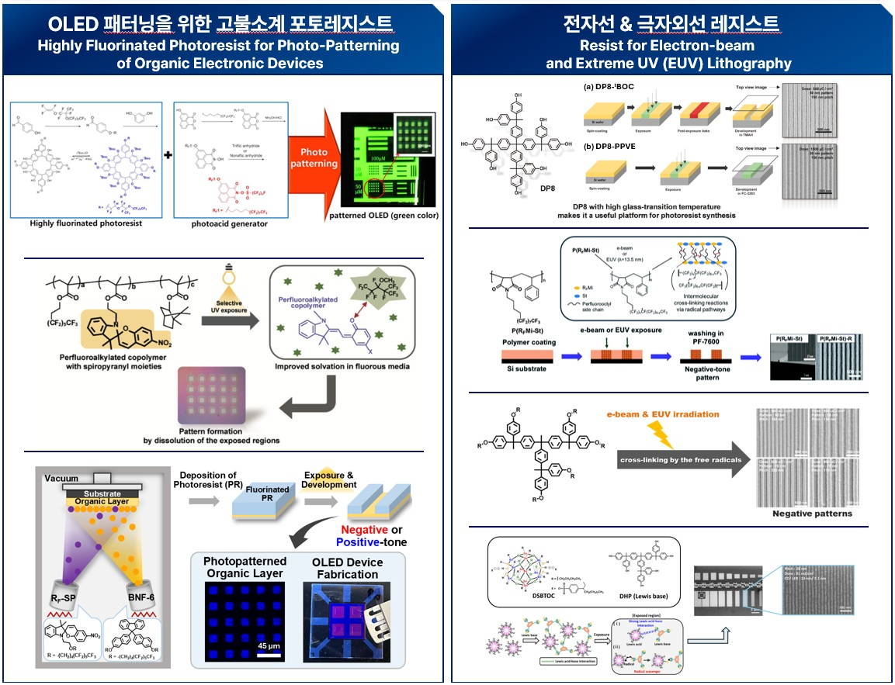

To design and synthesize high-performance photoresists for EUV (13.5 nm) and E-beam lithography. We strive to push the limits of resolution and sensitivity for sub-10nm semiconductor fabrication through molecular engineering of resist materials.
- We modulate metal-oxide nanoclusters through structural modifications and composite formulations to achieve efficient positive-tone behavior.
- Our research also focuses on negative-tone patterning by utilizing the unique characteristics of C-F bonds in fluorinated materials.
- Furthermore, we implement various strategies to enhance EUV absorption cross-sections and minimize stochastic noise for next-generation lithography.